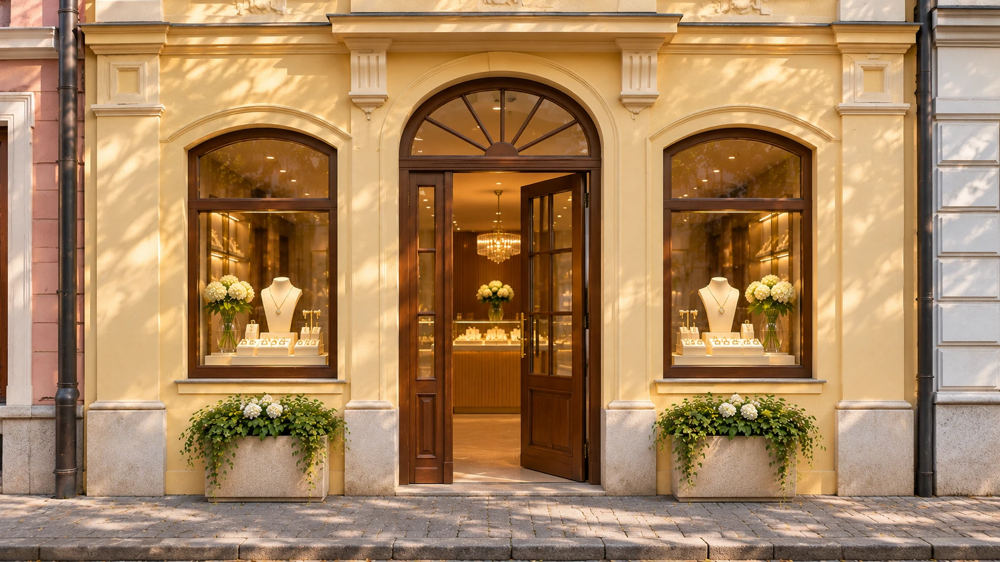
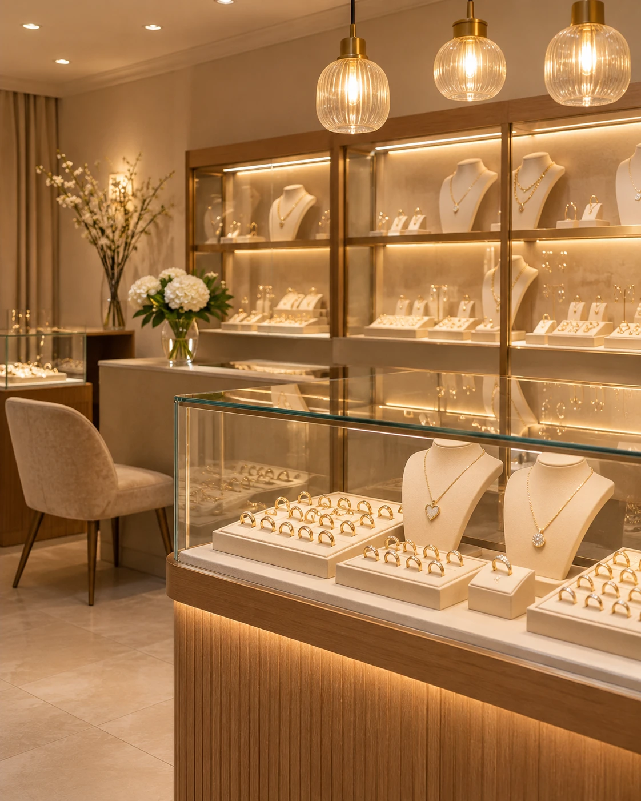
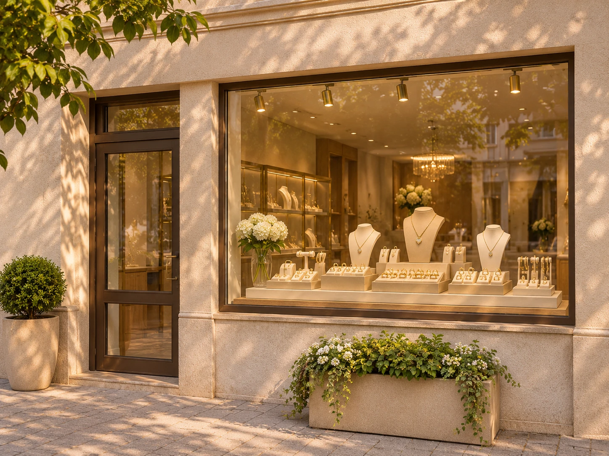
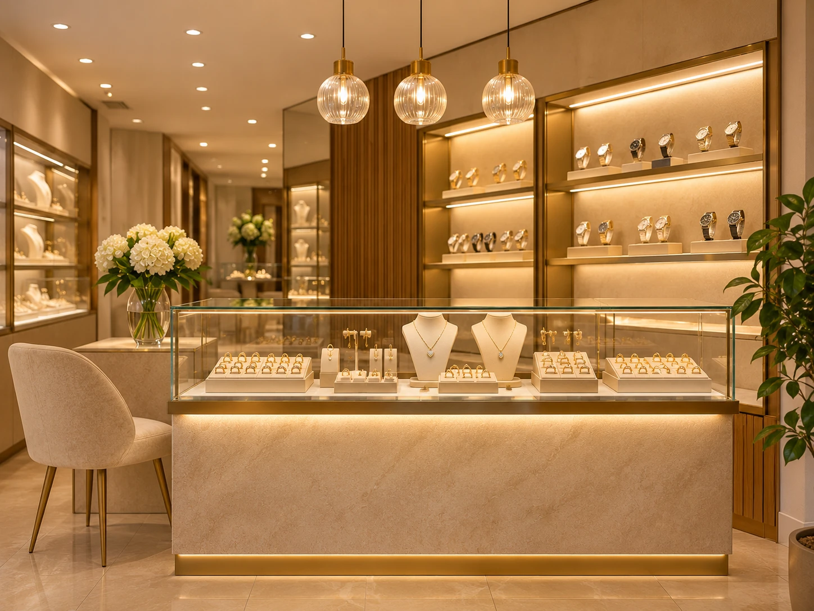
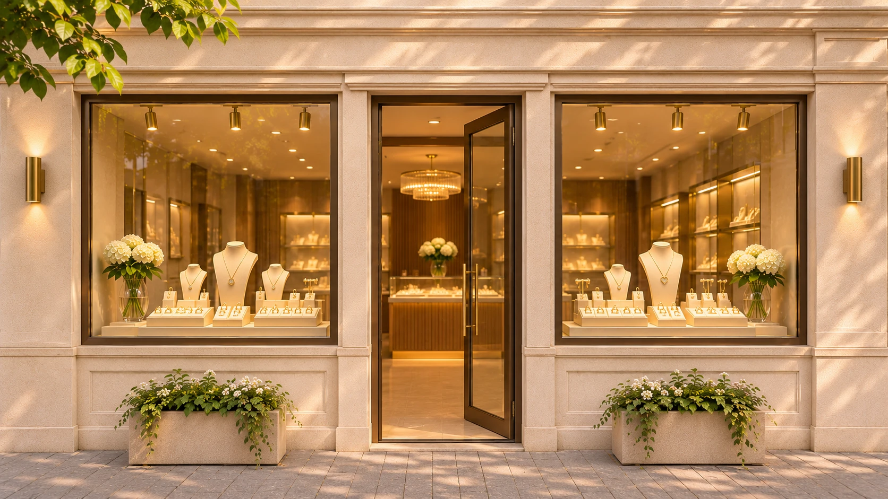
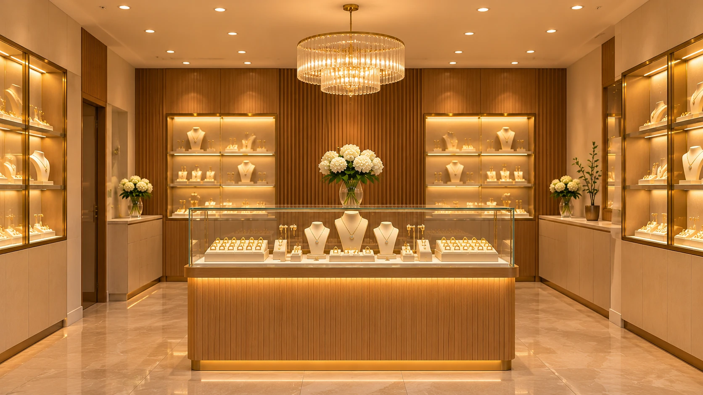

Apatin
Srpskih vladara 10
- Adresa
- Srpskih vladara 10, 25260 Apatin
- Telefon
- 061 225 8641
- Radno vreme
- 9 - 16 h, [UPIŠI DANE, npr. ponedeljak - subota]
Cene su na sajtu. Poručite preko forme, a mi šaljemo brzom poštom ili vas čekamo u radnji u Apatinu ili Somboru.
Pogledajte burme
Radnju u Apatinu otvorili smo 1993. godine, u Ulici srpskih vladara 10. Radnju u Somboru otvorili smo [UPIŠI GODINU].
U obe radnje možete da probate nakit i preuzmete porudžbinu sa sajta.


Na sajtu nema korpe ni plaćanja karticom. Pošaljete nam formu, a mi vas pozovemo i dogovorimo ostalo.
Forma je na stranici svakog proizvoda. Upišite ime, telefon i adresu. Za prsten i narukvicu upišite i meru.
Pozovemo vas ili pišemo mejlom. Proverimo veličinu i potvrdimo porudžbinu.
Pošaljemo vam iznos i broj računa. Nakit spremamo za slanje tek kad uplata stigne.
Pakujemo ga i šaljemo brzom poštom na vašu adresu. Ako vam je lakše, preuzmite ga lično, u radnji u Apatinu ili Somboru.
Ako ne nađete odgovor, pozovite nas na 061 225 8641.
Obmotajte konac oko prsta, na mestu gde nosite prsten. Obeležite gde se spaja i izmerite ga lenjirom u milimetrima. Taj broj upišite u formu.
Ako niste sigurni, upišite približnu meru. Proverićemo je zajedno kad vas pozovemo, pre nego što pošaljemo prsten.
[UPIŠI ODGOVOR: da li je nakit žigosan, koliko traje garancija i šta pokriva]
[UPIŠI ODGOVOR: da li je moguća zamena ili prepravka veličine, u kom roku i ko plaća slanje]
Šaljemo brzom poštom [UPIŠI KURIRSKU SLUŽBU]. Paket stiže za [UPIŠI BROJ DANA], a slanje košta [UPIŠI CENU].
Porudžbinu možete i da preuzmete lično, u radnji u Apatinu ili Somboru.
Može. Tekst za gravuru upišite u formu kad poručujete, na primer imena i datum venčanja.
[UPIŠI: cena gravure, koliko znakova staje i koliko dana duže traje izrada]
Nakit sa sajta možete da probate u obe radnje. Tu možete i da preuzmete porudžbinu, ako ne želite da je šaljemo poštom.

Srpskih vladara 10


[UPIŠI ADRESU]